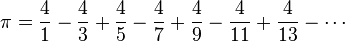

Approximating Pi
Problem written by Marek Szeles, methods inspired by Wallis, Leibniz and Nilakantha
One of the best known fundamental constants of Geometry is called Pi (π). You probably know that it describes a relation between the radius and circumference of a circle. But how do we get a value of Pi if the circumference is so hard to measure? This is an ancient problem - luckily many ancient mathematicians devised algorithms that can give good - although approximate answers. In this example, we will implement three of them, all of which are using infinite series to approximate the value of Pi.
An infinite series for PI published by Nilakantha in the 15th century goes as follows:

This method was found by John Wallis in 1655:
Leibniz used this approximation in 1674:

Of course, if we were to evaluate the infinite series, the program would run infinitely long! Luckily, we usually do not need an infinitely accurate estimation, so we will allow the user to input a specified number of steps - called iterations - through which the program should run.
Write a program that continually reads in the number of iterations from the user then outputs the approximation of Pi based on the methods above. Here is an example execution of the program:
Enter number of iterations for estimation algorithms: >? 1 The Pi estimation is... According to Nilakantha: 3.0 According to Wallis: 4.0 According to Leibniz: 4.0 Enter number of iterations for estimation algorithms: >? 3 The Pi estimation is... According to Nilakantha: 3.1333333333333333 According to Wallis: 3.4133333333333336 According to Leibniz: 3.466666666666667 Enter number of iterations for estimation algorithms: >? 99 The Pi estimation is... According to Nilakantha: 3.141592395970107 According to Wallis: 3.1495359598092802 According to Leibniz: 3.1516934060711166 Enter number of iterations for estimation algorithms: >? 999 The Pi estimation is... According to Nilakantha: 3.141592653339044 According to Wallis: 3.1423789362843118 According to Leibniz: 3.142593654340044
The more iterations you enter, the more accurate estimation of pi you get - but also the longer the calculation will take!
How many digits did the algorithms approximate correctly before being wrong? Can you say which algorithm is best? Why would you say so?
Solution
import math
def main():
# This program allows users to repeatedly approximate the value of pi through three infinite series approaches
# The only inputed argument is the number of iterations - the more iterations, the more accurate the result!
while True:
# Read the iterations in from the user. Type is integer
iterations = int(input("Enter number of iterations for estimation algorithms: "))
# Display different calculations to the user
print("The Pi estimation is...")
print("According to Nilakantha: ", nilakantha_pi(iterations))
print("According to Wallis: ", wallis_pi(iterations))
print("According to Leibniz: ", leibniz_pi(iterations))
print("")
def nilakantha_pi(x):
# An infinite series for PI published by Nilakantha in the 15th century goes as follows:
# 3 + (4 / 2 * 3 * 4) - (4 / 4 * 5 * 6) + (4 / 6 * 7 * 8) - ...
p = 3.0
for i in range(2, x + 1):
if i == 1:
p = 3.0
else:
p = p + ((math.pow(-1, i)) * 4 / (((i - 1) * 2) * (((i - 1) * 2) + 1) * (((i - 1) * 2) + 2)))
return p
def wallis_pi(x):
# This method was found by John Wallis in 1655:
# (2 / 1) * (2 / 3) * (4 / 3) * (4 / 5) * (6 / 5) * ...
p = 2.0
for i in range(1, x):
p = p * ((2 * i) / (1 + 2 * i)) * ((2 * (i + 1)) / (1 + 2 * i))
return p * 2
def leibniz_pi(x):
# Leibniz used this approximation in 1674:
# 4 / 1 - 4 / 3 + 4 / 5 - 4 / 7 + 4 / 9 - ...
p = 4.0
for i in range(2, x + 1):
p = p + ((-1 * math.pow(-1, i)) * 4 / (2 * i - 1))
return p
if __name__ == '__main__':
main()